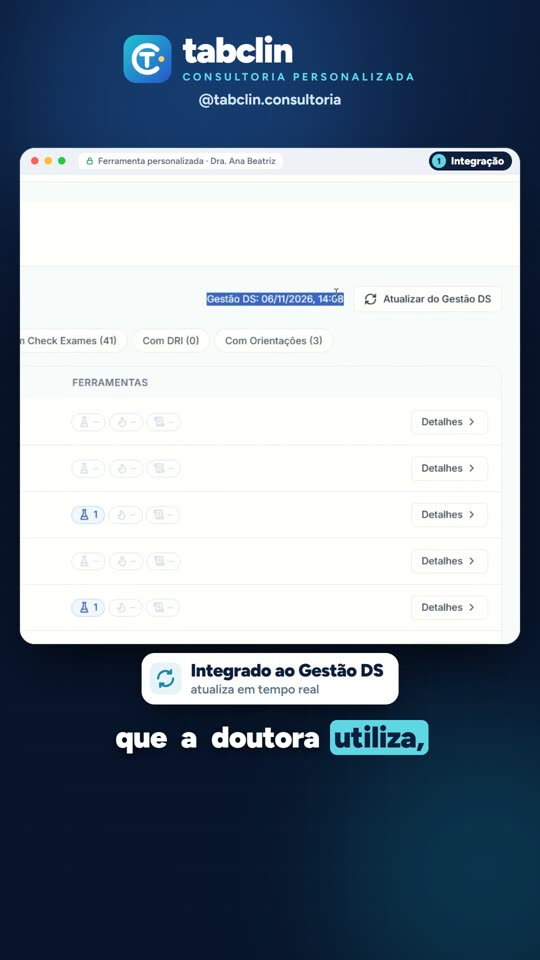
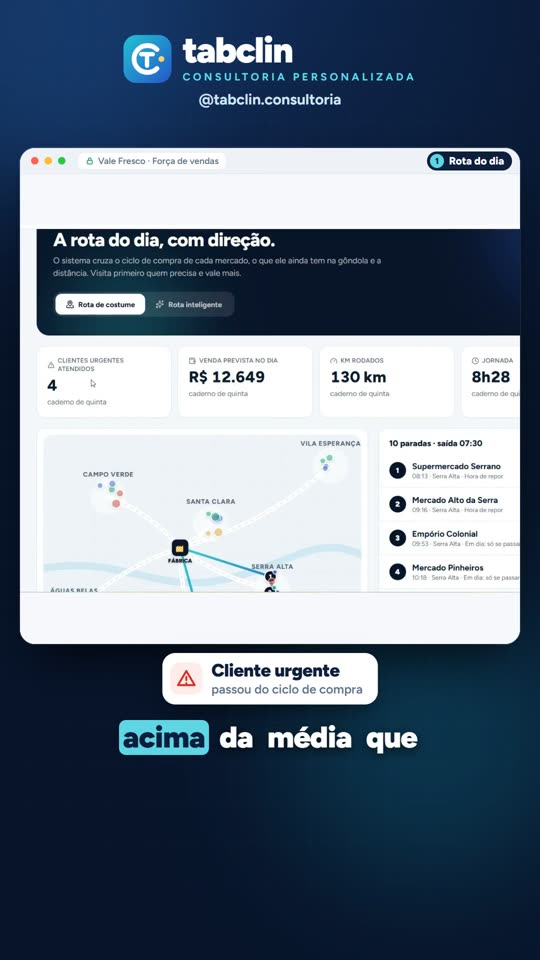

Saúde · clínica pediátrica
Laudos de exames lidos por IA
Integrada ao prontuário: o PDF do laboratório vira análise pronta em até 1 minuto, com alertas e relatório.
Encontramos o gargalo da sua operação e construímos a ferramenta sob medida para resolver, com IA, automação e os dados que você já tem.
Se algum destes pontos é familiar, existe ganho de produtividade e de margem esperando por você.
A equipe gasta horas em planilhas, conferências e repetições que poderiam ser automáticas.
A informação existe, mas está espalhada em sistemas e arquivos que ninguém cruza.
Dinheiro parado, compras no feeling e custos que ninguém enxerga até o fim do mês.
A empresa quer crescer, mas a operação já está no limite do jeito que funciona hoje.
Não vendemos software pronto. Primeiro entendemos a sua operação, depois construímos a solução que resolve o seu problema.
Escutamos a operação, mapeamos os processos e encontramos o gargalo real, onde a empresa perde tempo e dinheiro.
Construímos a solução com IA, automação e integração dos dados que a empresa já tem, do jeito que a sua equipe trabalha.
Acompanhamos os resultados, treinamos a equipe e evoluímos a ferramenta, porque processo bom é processo que melhora sempre.
Veja funcionando, na tela, em menos de 2 minutos cada.

Integrada ao prontuário: o PDF do laboratório vira análise pronta em até 1 minuto, com alertas e relatório.
Venda pela placa, estoque endereçado e cores que mostram o que está parado, em excesso ou na hora de repor.

Cruza o ciclo de compra de cada cliente com a distância e mostra quem visitar hoje, com pedido sugerido.
Unimos gestão e tecnologia para pequenas e médias empresas ganharem produtividade e lucratividade. Encontramos o gargalo, construímos a ferramenta sob medida e acompanhamos a melhoria contínua.
Uma conversa sem custo, presencial em São José do Rio Preto ou online, para entender a sua operação e mostrar onde estão os ganhos de produtividade e de margem.